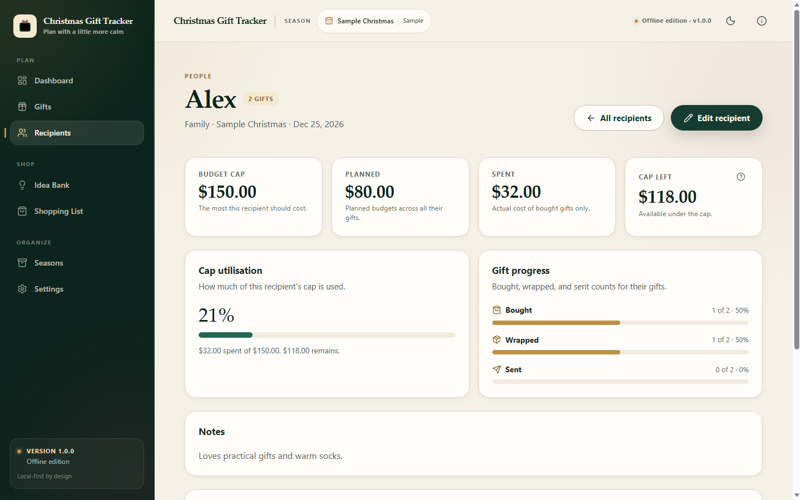
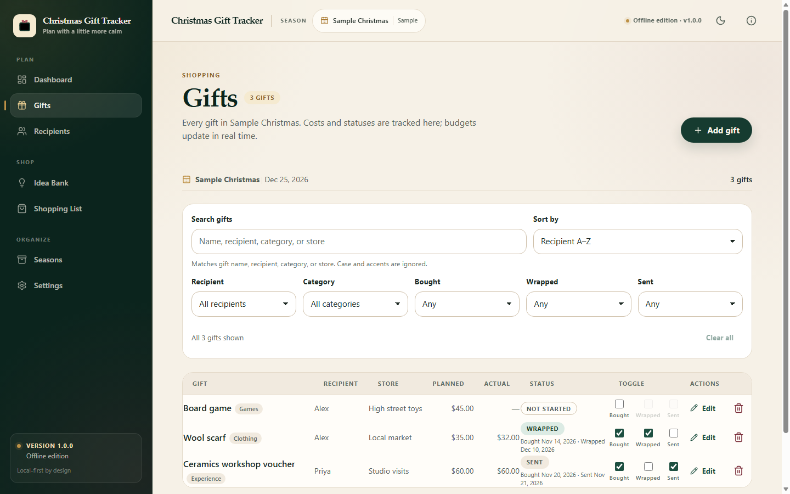

User guide
Plan the people, the gifts, and the budget without losing the thread.
This guide explains every screen in the offline edition, how the totals are calculated, how to protect your data, and what the app deliberately does not do. It is written for the tested build. If the app and this guide ever disagree, the app’s on-screen explanations and the current release notes take priority.
Christmas Gift Tracker is a single-user Christmas gift planner. It keeps one season active at a time, with older seasons kept as read-only archives. Recipients, gifts, ideas, budgets, and notes live in this browser’s local database.
| Included in this edition | Not included |
|---|---|
| Seasons and archives; recipients; gifts and statuses; budgets and dashboard; budget-vs- actual chart; Idea Bank; Shopping List; search and filters; JSON backups; CSV export; sample data; themes; currency display; print views; offline app installation. | Accounts, sign-in, cloud sync, automatic/cloud backups, built-in PDF export, merging two backups, and verified Firefox/Safari/iOS behavior. |
The offline edition makes no network requests during core use. It has no account system, no analytics, no advertising, and no third-party runtime assets. The only network activity needed is the initial visit (and later app updates).
After this visit, the app can launch from its icon, home screen, or bookmark without a connection. Do not open index.html directly from a downloaded folder: browser storage and offline caching require a hosted https:// address.
| Device and browser | How to install |
|---|---|
| Chrome or Edge on a computer | Use the install icon in the address bar, or browser menu > Install this site as an app. |
| Android | Browser menu > Install app or Add to Home screen. |
| iPhone or iPad (Safari) | Share > Add to Home Screen. |
| Firefox on a computer | No app install is offered. Bookmark the page; offline use still works after the first visit. |
Installation behavior differs by browser and version. Microsoft Edge 156 on Windows is the configuration verified for this release. Chrome is expected to behave the same way. Safari, Firefox, Android, and iOS installation flows are documented guidance, not verified behavior.
The setup form asks for a season name, a Christmas date, and an optional season budget. You can also choose a light/dark/system theme and a currency. Nothing is saved until you submit the form.
If you want to explore first, tick “Load the optional sample season.” The sample is flagged with a SAMPLE DATA badge. It can be removed later from Seasons & archives without affecting real records.
The dashboard shows the active season (or an archived season, read-only). Each figure answers a different question:
| Figure | Meaning |
|---|---|
| Season budget | The overall amount you set for the season. It can be left blank. |
| Planned spending | The sum of planned budgets across all gifts, whether bought or not. |
| Actual spending | The sum of actual costs for gifts marked bought. Unbought gifts contribute nothing. |
| Remaining budget | Season budget minus actual spending. |
| Unallocated budget | Season budget minus planned spending. It is not the same as remaining budget. |
The countdown uses the season’s Christmas date. The chart compares planned and actual amounts and includes an accessible table of the same numbers. Gift progress counts bought, wrapped, and sent gifts. Data-quality alerts point out gaps such as a bought gift with no actual cost.
Remaining reflects money you have already spent. Unallocated reflects money not yet assigned to a gift plan. A season can have unallocated money and still be over its actual budget, or the reverse.
Open Seasons & archives from the sidebar. There is at most one active season. Starting a new season archives the current one in the same step; records are never merged between seasons.
Archived seasons are read-only: you can view, export, print, and include them in backups, but not edit them. Restoring an archived season makes it active and archives the current active season in the same transaction.
Creating a new season archives the current one. You can copy recipients from the previous season; their names, relationships, caps, and notes carry over, but gifts and ideas do not.
Deleting an archived season requires typing its exact name. The active season cannot be deleted this way. Sample seasons follow the sample-data rules described in section 10.
Each recipient belongs to one season. A recipient can have a relationship, an optional spending cap, and notes. The recipients list shows planned and spent totals, while the detail page shows cap utilisation and gift progress.

Deleting a recipient who has gifts requires choosing what happens to those gifts: reassign them to another recipient (typing the source recipient’s name to confirm) or delete them with the recipient. Ideas linked to the recipient become unassigned.

A gift can include:
| Required | Name and recipient. |
|---|---|
| Optional | Planned budget, actual cost, category, store, purchase link, delivery method, address, notes, and dates for bought, wrapped, and sent. |
Actual cost is optional. A bought gift with no actual cost appears in data-quality alerts so you can fill it in. Until then, spending uses only costs that exist.
Purchase links must start with http:// or https://. Other schemes are rejected. Opening a link offline may show the browser’s no-connection page; the planner stays open.
Deleting a gift asks for confirmation. If the gift came from an idea, deleting it reopens that idea in the Idea Bank instead of losing it.
The Idea Bank holds possibilities that are not yet gifts. Ideas do not count toward budgets, progress, or the Shopping List until you convert one.
The Shopping List is generated from unbought gifts in the active season. It is never stored separately. Items are grouped by store, with a subtotal for each group and a total planned amount for the list.
Gift search matches name, recipient, category, and store, ignoring case and common accent differences. You can combine search with recipient, category, bought, wrapped, and sent filters; all active conditions must match. Sorting covers name, planned budget, actual cost, and status.
The Idea Bank has its own search. Use Clear all or Clear search to reset the controls. Empty states explain how to remove filters when nothing matches.
The planner lives in this browser. Downloading a JSON backup is the deliberate way to keep a copy you can move, archive, or restore. There is no automatic or cloud backup in this edition.
Go to Seasons & archives > Backup and restore > Download backup. The JSON file includes settings, every season (active and archived), recipients, gifts, ideas, addresses, and notes. Keep it private.
Restore replaces everything on this device. It does not merge two backups. Invalid, newer, or inconsistent files are rejected without changing current data.
CSV export covers the active season or all seasons. Address and notes columns are off by default. Exported text that looks like a spreadsheet formula is neutralized with a leading apostrophe. The file is UTF-8 with a byte-order mark for Excel, Numbers, and Sheets.
Sample data is optional and clearly flagged. You can load one sample season, explore it, and remove it later without touching real records. Sample seasons are read-only examples. Removing sample data is permanent, and an archived sample season cannot be restored; real seasons can. The included Sample-Backup.json also restores as flagged sample data.
Reset erases this browser’s planner data. It requires a fresh backup and typing DELETE. After a reset, the app returns to first-season setup. Reset is intentionally harder than deleting one record.
Choose Light, Dark, or System in Settings > Appearance or from the header toggle. The theme is applied before the page paints, so there is no flash. The choice is saved in this browser.
Currency is display-only. Changing the code, symbol, or fraction digits reformats stored amounts; it never converts or rewrites them. If monetary data exists, the app asks for confirmation before reinterpreting the display.
The amount field accepts an optional symbol, spaces, apostrophes, and grouping separators. A dot or comma is read as a decimal separator only when it is followed by at most the configured number of fraction digits. Otherwise it is treated as a grouping separator.
| You type (USD, 2 fraction digits) | Stored as |
|---|---|
| 12.50 | $12.50 |
| 12,50 | $12.50 |
| 12.345 | $12,345.00 - three trailing digits are read as grouping |
| 1,234.56 | $1,234.56 |
Check the money preview before saving. If a separator is ambiguous for the currency you chose, type the amount without grouping separators.
The footer reports the connection honestly: “Saved on this device” when online, and “Offline” (all data saved on this device) when offline. Offline mode does not block editing; the local database already works without a network.
When a new version is saved, a banner says “A new version is ready.” Choose Reload to update when convenient, or Later to dismiss it. If a dialog or form is open, the reload is refused with a reminder to close it first, so unsaved work is not discarded.
Settings > Storage health can ask the browser for persistent storage. The app reports whether the request was granted, declined, or unsupported. A grant reduces the chance of eviction under disk pressure; it is not a guarantee. Keep backups.
The same section shows counts and integrity issues only - no names, addresses, or notes. It also shows app and schema versions.
| Problem | What to do |
|---|---|
| The app does not open offline. | Visit the hosted address once more while online, wait for loading to finish, then try again. Private/incognito windows are not reliable for offline use. |
| A storage or quota message appears. | Your data has not been deleted. Download a backup first, free browser or disk space, and reload. Follow the steps in the message. |
| My data is missing after changing browsers or devices. | Data is per browser profile. Open the original browser, or restore a JSON backup from Seasons & archives. |
| The install option is missing. | Some browsers do not offer installation. Bookmark the app; offline use still works after one online visit. |
| An amount looks larger than I typed. | A single separator followed by more than the fraction digits is read as grouping. See section 11.3 and check the preview before saving. |
| I cannot restore an archived sample season. | Sample seasons are read-only examples and are not restorable. Real archived seasons can be restored. |
| Restore is disabled. | Download the current data first, then type RESTORE exactly. Both are required. |
| A purchase link does not open offline. | External links need a connection. The planner stays open; try the link later. |